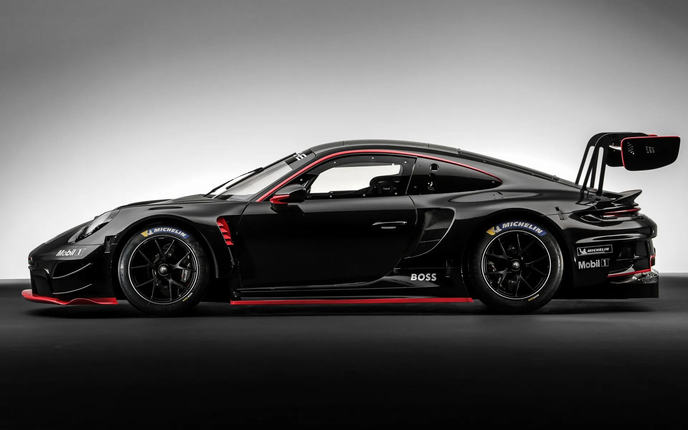
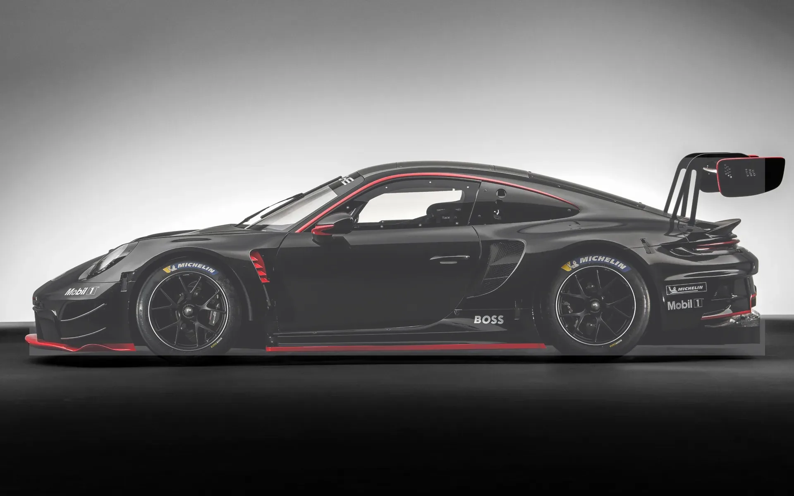
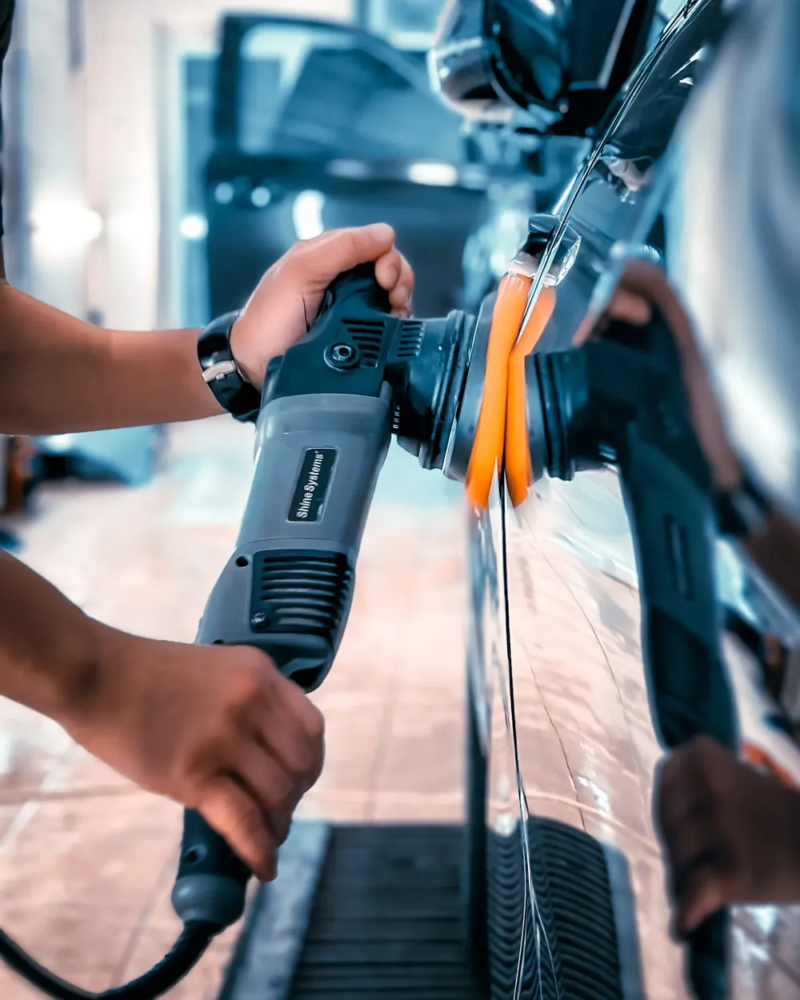
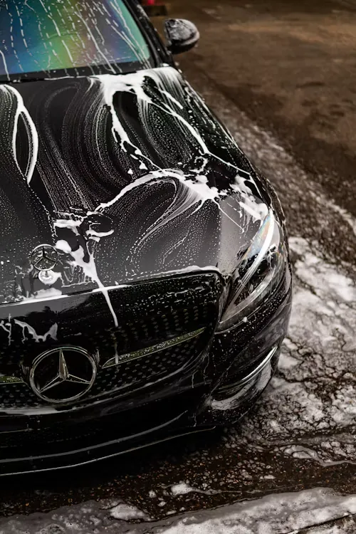
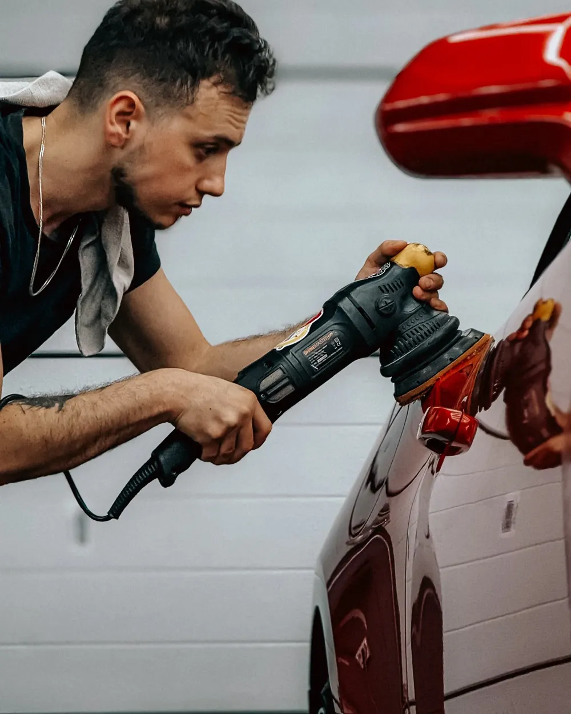
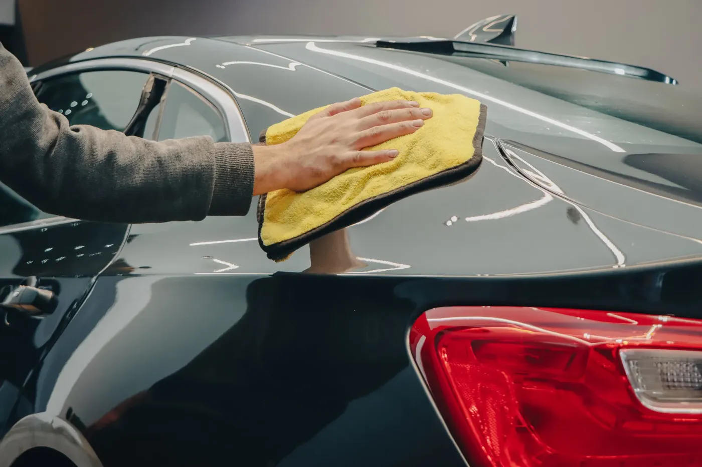

Lucidatura auto a Roma


Primaopaca, swirl
Dopocorrezione 2 fasi
Detailing a domicilio a Roma: correzione della vernice, coating ceramico, ripristino fari. Veniamo noi, dentro il GRA.
Preventivo gratuito su foto.
Cosa vedi sotto la luce
Di giorno la vernice sembra a posto. Con una torcia o al sole basso compaiono i difetti. Scegli quello che riconosci sulla tua auto.

Dove si rovina un'auto a Roma
Pini, parcheggi stretti, sole d'estate. Ogni zona dell'auto ha il suo nemico. Tocca un punto per vedere cosa succede e come si sistema.
Il prezzo in 30 secondi
Rispondi a quattro domande. Ti diamo una forbice di prezzo e il messaggio WhatsApp già scritto: aggiungi due foto e lo mandi.
Prezzi della lucidatura auto
Prezzi di partenza per una citycar a Roma. Ogni lavoro include lavaggio a mano, decontaminazione e mascheratura di plastiche e guarnizioni.
| Servizio | Cosa risolve | Tempo | Da |
|---|---|---|---|
| One-Step | Opacità e segni leggeri. Per auto nuove o tenute bene che hanno perso brillantezza. Sigillante 6 mesi. | 4–5 ore | 150 € |
| Correzione 2 fasi | Swirl marcati, ologrammi, micrograffi. Prima taglio, poi finitura. Rende di più sulle vernici scure. Sigillante 12 mesi. | 7–9 ore | 200 € |
| Coating ceramico | Strato protettivo sopra la vernice corretta: l'acqua scivola, lo sporco si attacca meno, il lavaggio è più facile. Fino a 24 mesi. | 1–2 giorni | 250 €+ correzione |
| Ripristino fari | Fari gialli o opachi tornano trasparenti. Chiudiamo con una protezione UV contro l'ingiallimento. | 1 ora | 30 €la coppia |
Quanto dura la protezione
Come funziona
Dal primo messaggio alla consegna. Paghi a lavoro finito.
Foto su WhatsApp
Due o tre foto della vernice al sole, o con la torcia del telefono.
Preventivo
Ti diciamo cosa si può togliere, cosa no e quanto costa.
Appuntamento
Veniamo da te: garage, box o cortile. Lun–sab, 9–19.
Lavoro
Lavaggio, decontaminazione, correzione. Pannello per pannello.
Consegna
Controllo con te sotto la luce, protezione applicata, foto finali.



Lucidatura a domicilio in tutta Roma
Lavoriamo dove tieni l'auto, in tutta Roma dentro il Raccordo. Fuori dal GRA si può fare, con un piccolo supplemento.
- SpazioGarage, box o cortile. All'aperto solo all'ombra.
- CorrenteUna presa normale a 220 V entro 20 metri.
- Il restoProdotti, lampade e attrezzatura li portiamo noi.
- OrariLunedì–sabato, 9:00–19:00.
Domande che ci fanno spesso
Quanto costa una lucidatura auto a Roma?
Si parte da 150 € per una citycar con il One-Step. La correzione in 2 fasi parte da 200 €, il coating ceramico da 250 € in più della correzione. Il prezzo cambia con le dimensioni dell'auto e lo stato della vernice: prova il calcolatore qui sopra o mandaci due foto su WhatsApp.
Quanto dura il risultato?
Il sigillante del One-Step tiene circa 6 mesi, quello della correzione circa 12. Il coating ceramico arriva a 24 mesi se lavi l'auto a mano e senza spazzole.
La lucidatura toglie tutti i graffi?
Toglie swirl, ologrammi e micrograffi. Un graffio che blocca l'unghia è più profondo del trasparente: si attenua, ma resta visibile. Lo vediamo dalle foto e te lo diciamo prima.
La lucidatura consuma la vernice?
Toglie pochi micron di trasparente, la parte che si è rovinata. Per questo non lucidiamo più del necessario: su un'auto quasi nuova basta un passaggio leggero.
Devo essere presente?
Solo all'inizio e alla consegna. Il controllo finale lo facciamo insieme, con la luce, pannello per pannello.
Come pago?
A lavoro finito, dopo il controllo. Contanti, carta o bonifico.
Mandaci la tua auto in due foto
Una foto di tutta l'auto e una da vicino, al sole o con la torcia. Ti rispondiamo con cosa si può fare e quanto costa.
Scrivici su WhatsApp